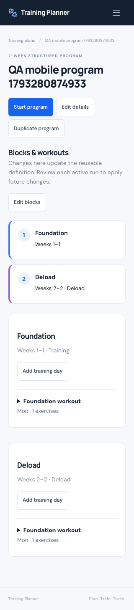
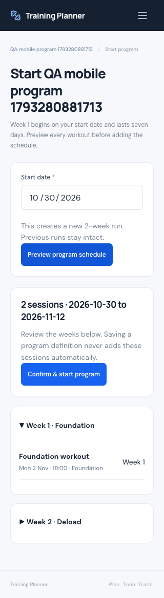
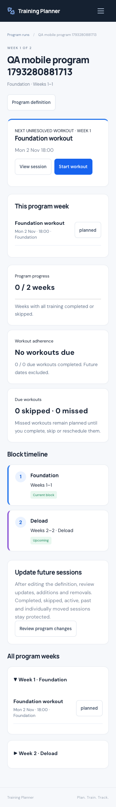
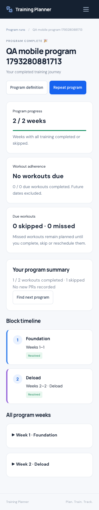
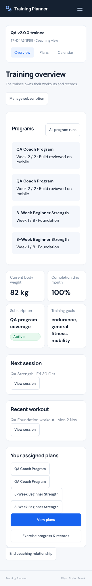

Mobile verification evidence
Open an image for the full screenshot. These are disposable QA fixtures.










01 / 45
Baseline version / commit
Accepted baseline: v1.9.1, release tag
f9e650d26fb7e58851c15f4d0a4314495b141d9f. Work began from clean main 29f82271990de1880ae859ee78518f6c77ff883c, which records the verified Hostinger deployment. Existing tags remain unchanged. Baseline verification passed 434 PHP tests / 8,778 assertions, 27 JavaScript tests and the frontend build.02 / 45
Repository inspection
Inspected routes, policies, ownership context, requests, models, migrations and actual indexes; the existing ActiveWorkout, PlanSchedule, recurring schedules, snapshot handling, media copies, ExerciseProgress, ExerciseProgression, recommendations and coach workflows. Ran the existing application on localhost:8000, tests and production build before implementation. Captured database and upload fingerprints before the additive migration and again before disposable QA.
03 / 45
Architecture decisions
Extend the existing Laravel monolith, Inertia/React pages and FullCalendar. TrainingPlan remains the reusable definition; TrainingBlock groups its existing days; ProgramRun records an independent execution. Existing ScheduleEntry rows drive Calendar, workouts and History. No second logging engine, duplicated history system, queue, package upgrade or speculative indexing layer.
04 / 45
Simple Plan compatibility
All existing plans default to
structure_type = simple. Their fixed/ongoing scheduling, weekday shortcuts, recurring moves and cancellation markers remain available. Programs use an explicit finite start flow. Editing the type field cannot silently convert a saved simple plan. Selecting or assigning a catalog program never starts it automatically.05 / 45
Structured Program architecture
Programs have a finite 1–52 week duration and one or more ordered, contiguous blocks. Definitions can be copied and edited independently of their runs. The UI separates program definition, Start Program, current run and run history. Multiple runs can coexist; no account-wide “one active plan” restriction was added.
06 / 45
TrainingBlock implementation
Each block owns its name, description, normal/deload type, inclusive week range and ordered position. Existing TrainingDay and TrainingExercise remain the prescription model. Whole-structure validation rejects missing weeks, overlaps, invalid ranges and foreign block IDs. Mobile arrow controls reorder ranges. Duplicate block copies days, exercise prescriptions, media, supersets, stable library identity and weekdays independently.
07 / 45
ProgramRun implementation
A run stores the trainee owner, optional source plan, starting actor, unique start token, start date, active/completed/ended status, completion timestamp and definition snapshot. The source plan may be deleted without removing its runs. Completion is derived from current session status and can reopen if a workout becomes planned again. The ended state is reserved; End Program Early has no action in v2.0.0.
08 / 45
Database / schema changes
One additive migration:
2026_10_29_000012_add_structured_programs.php. It adds training_blocks and program_runs; plan type/duration; nullable day block reference; and session run/week/context/prescription fields. Nullable references preserve historical sessions when definitions disappear. Existing source_exercise_key indexing and unique occurrence identity were inspected and reused; no duplicate progress index. No original row was rewritten into a program.09 / 45
Program Week logic
Week 1 is the seven-day interval beginning on the selected start date. The current week is the earliest week containing unresolved required training, not elapsed calendar time. Completed and skipped training resolve requirements; rest days do not block advancement. Out-of-order completion contributes records without jumping past an earlier unresolved workout.
10 / 45
Missed-workout logic
A planned, unstarted training session whose scheduled time/date is due is displayed as missed. Missed is a derived display state, not another stored status. It remains unresolved until completed, skipped or moved and subsequently resolved. A vacation does not silently advance the program.
11 / 45
Block transitions
The block containing the current logical week is shown as current. When all required workouts in that week resolve, the next unresolved week determines the next block. Future sessions already carry that block’s authored sets, reps/duration and weight prescription. Deloads use explicit lower-volume prescriptions; they do not fabricate actual results or apply hidden weight formulas.
12 / 45
Program scheduling
Start Program takes a date, produces a grouped week-by-week schedule preview, and requires explicit confirmation. It generates the complete finite schedule using the existing Calendar entries. Every block needs a usable training day; every training day needs exercises and selected weekdays. A 1,000-session guard bounds accidental oversized generation. Coach-created dates must fit the active subscription.
13 / 45
Schedule identity
Each occurrence keeps
program:{run}:{week}:{day}:{original-date} in the existing unique occurrence key. Calendar rescheduling retains this identity and logical week. Repeated confirmation returns the same run and cannot duplicate sessions. A new repeat uses a new run identity. Program sessions never enter the simple-plan “this and future” series operation.14 / 45
Program editing protection
Saving a definition never rewrites its runs. Review Program Changes produces UPDATE / ADD / REMOVE / KEEP / PROTECTED groups with a signed fingerprint. Applying recomputes the diff under locks and rejects stale changes. Completed, skipped, active, saved, past and individually moved/edited sessions are protected. Coach changes additionally protect current/resolved blocks and unauthorized sessions. Historical block metadata is retained.
15 / 45
Active Workout integration
Program prescriptions seed the existing ActiveWorkout snapshot and structured set rows. Starting copies media into independent workout snapshot media. Subsequent definition edits do not change active or saved workouts. Quick completion, actual weight/reps/duration, supersets, restart/resume, calories and History continue using the established engine. Only trainees can log their own performance.
16 / 45
Progressive Overload integration
Block prescriptions remain the baseline. Suggestions target a specific block exercise, not every exercise with a matching name or library key. Applying a suggestion changes only that selected reusable exercise and never active/results snapshots; a run schedule still needs explicit review. Coach suggestion eligibility and the mutation endpoint both enforce current/completed block locks, in addition to existing assignment/subscription checks.
17 / 45
Exercise Progress integration
Exercises retain stable source keys across blocks, copies and runs, so existing Progress and PR queries aggregate comparable completed structured results. Only CURRENT completed sessions qualify. Null or zero actual weight remains valid for reps/history but never creates weighted PRs, weighted volume or a weight chart point. Timed and rep tracking stay separate. No second PR system was introduced.
18 / 45
Program adherence
Program progress shows resolved weeks / total weeks. Workout adherence shows completed due workouts / all due required training workouts. Skipped and missed due workouts remain in the denominator; future and rest sessions do not. With no workouts due, the UI says “No workouts due” rather than inventing a percentage. Resolving a week by skipping is distinct from adherence.
19 / 45
Program completion
The run completes only when all required training is completed or skipped and no active workout remains. A locked, idempotent synchronization stores a single completion timestamp. Rest status does not prevent completion. Reopening a workout reopens the run and removes the completion timestamp, using current status rather than adding historical status versions.
20 / 45
Completion summary
The completion screen reports real completed/total workouts, skips, due-workout adherence and existing PR events linked to the run’s completed sessions. Weighted change compares the first and last positive weighted performance within that run. Body-weight change uses recorded historical entries on/before start and completion; no current-profile fallback. Missing evidence produces no fabricated gains or weight change.
21 / 45
Repeat Program
Repeat opens a fresh date/preview/confirmation flow for the reusable definition and creates a separate run. Prior results, session identities, completion metadata and snapshots are retained. If the definition was deleted, its historical run remains readable but there is no invalid repeat action.
22 / 45
Historical Run preservation
Program Runs lists independent executions and opens their saved weeks, sessions and metadata even after the source definition is deleted. Session snapshots and program prescriptions retain independent media. Changing a current status affects live metrics as required, without inventing a second historical-result store.
23 / 45
Coach Program support
The existing Coach Workspace includes program templates, catalog selection, trainee-owned assignments and run monitoring. Coach trainee overview shows program cards and links to the run. Existing workspace/account policy is preserved: a trainee cannot enable coaching tools. There is no impersonation or coach performance-entry route.
24 / 45
Coach assignment
Assignment deep-copies blocks, days, exercise data and media into an independent trainee-owned program. It requires the existing active relationship and subscription. It does not create sessions or a run. An authorized coach or the trainee then chooses a start date and confirms the schedule; template edits never overwrite that assignment.
25 / 45
Coach authorization
Server checks cover owner, route context, relationship, assignment and subscription—not just hidden controls. Coach A cannot manage Coach B’s assignment or a personal program. Current/completed blocks and protected sessions cannot be edited via alternate overload endpoints. Paused/expired service denies management while permitted monitoring follows existing policy; disconnect immediately denies coach access and preserves trainee data.
26 / 45
Program catalog
Four authored programs join the existing 19 simple plans: 8-week Beginner Strength; 12-week Hypertrophy; 10-week Body Recomposition; 12-week Powerbuilding. Each has complete blocks, normal/deload prescriptions, weekday schedules and real exercise-library keys/media. Program previews show the timeline and expandable workouts before an independent copy is created.
27 / 45
Recommendation integration
The deterministic existing preference ranker remains the source of recommendations. All / Plans / Programs composes with existing search and filters. Program duration, experience, goal and equipment information are visible. Advanced programs remain browsable; recommendations do not silently start or assign training.
28 / 45
Mobile-first UI
New program pages use the existing light styling, header, navigation, forms and modals. Blocks stack vertically at phone widths; actions wrap; weeks and workouts collapse; arrows replace drag-only reordering. Verified at 320, 360, 375, 390, 430, 768 and 1280 px in Chromium and WebKit, including long program/block names and Calendar context. Existing v1.9.1 mobile rules remain last in the CSS cascade.
29 / 45
Accessibility
Reused labeled native inputs, shared focus-managed modals, visible buttons and keyboard-operable details/summary sections. Program progress has an accessible label, errors use an alert role, and block movement has button controls. Existing mobile touch-target and font rules apply. Browser automation and visual checks were performed; no claim of a full WCAG certification or physical-device lab test.
30 / 45
Bugs found / fixed
Pre-release QA fixed: date-only session values appearing as UTC timestamps/previous dates; coach future-session checks losing the source assignment after a definition day was deleted; a missing Storage import in an after-commit block-media cleanup callback; and an alternate overload endpoint bypassing coach current-block restrictions. Locking reads protect against stale MySQL REPEATABLE READ snapshots. Temporary QA selector/Referer issues were corrected in test tooling, not counted as product defects.
31 / 45
SQLite results
Final full suite: 454 tests / 9,715 assertions passed. Includes 19 StructuredProgram tests plus a separate real-commit media cleanup test. Coverage includes schema/compatibility, finite coverage, copying, idempotency, stale previews, logical weeks, missed/out-of-order workouts, progression, historical data, media rollback, completion and coach security.
32 / 45
MySQL results
The same 454 tests / 9,715 assertions passed on the isolated
training_planner_test MySQL database. The development database was not used for destructive tests. Migration and rollback behavior, real foreign keys and source-key queries are exercised. Production MariaDB is verified separately during deployment.33 / 45
Concurrency results
28 two-connection checks: existing coaching 17, recurring Calendar 4 and programs 7. Program checks cover concurrent committed start replay, no duplicate run/sessions, stale future apply after workout start, changed prescription rejection without partial data, completion observing concurrent resolution, idempotent completion time and reopening. Transactions use locking reads where current committed evidence matters.
34 / 45
JavaScript tests
28 JavaScript tests passed. New program-type filtering composes with the existing discovery filters. Existing date handling, recurrence, goal ordering, calendar and superset tests remain passing.
35 / 45
Browser regressions
Local authenticated HTTP workflows: 119 existing checks + 14 program/coach integration checks. Program lifecycle: 90 checks in Chromium and 90 in WebKit. Coach lifecycle: 60 checks in each engine. Existing mobile stabilization: 37 checks in each engine. Program and coach scripts assert seven widths, successful real UI actions, no page overflow, broken assets, application console errors or React warnings. Screenshots below show disposable QA accounts, not real trainee data.
36 / 45
Production build
Vite production build passed with the existing lockfile and dependencies. Production uses prebuilt hashed assets; it does not require Node or a dev server. Old hashed assets are retained on Hostinger during deployment to support already-open browser sessions.
37 / 45
Formatting checks
Laravel Pint, changed-file Prettier and
git diff --check passed. Browser scripts were formatted with the existing local tool. No dependency installation, application reinstall or framework recreation was performed.38 / 45
Data-integrity result
Local cleanup removed 3 disposable accounts and 524 generated QA media files. All 19 table fingerprints and 44 original media hashes exactly match the pre-QA baseline; comparison to the pre-migration original columns also passed. Production backup/cleanup results are recorded in Deployment Status. Private QA credentials, connection settings and deployment tokens are never committed.
39 / 45
Files added
This report and its mobile screenshots are stored under docs/. Runtime and test additions:
app/Http/Controllers/ProgramController.phpapp/Models/ProgramRun.phpapp/Models/TrainingBlock.phpapp/Services/ProgramDefinition.phpapp/Services/ProgramLifecycle.phpapp/Services/ProgramSchedule.phpdatabase/migrations/2026_10_29_000012_add_structured_programs.phpresources/css/programs.cssresources/data/training-programs.phpresources/js/Features/ProgramBlockEditor.jsxresources/js/Features/ProgramUI.jsxresources/js/Pages/Programs/Index.jsxresources/js/Pages/Programs/Run.jsxresources/js/Pages/Programs/Show.jsxresources/js/Pages/Programs/Start.jsxtests/Browser/coach-programs.mjstests/Browser/programs.mjstests/Concurrency/ProgramConcurrency.phptests/Feature/ProgramMediaCleanupTest.phptests/Feature/StructuredProgramTest.phptests/js/programDiscovery.test.js
40 / 45
Files changed
CHANGELOG.mdREADME.mdapp/Http/Controllers/CoachAssignmentController.phpapp/Http/Controllers/CoachController.phpapp/Http/Controllers/CoachScheduleController.phpapp/Http/Controllers/DashboardController.phpapp/Http/Controllers/RecommendationController.phpapp/Http/Controllers/ScheduleEntryController.phpapp/Http/Controllers/TrainingDayController.phpapp/Http/Controllers/TrainingHistoryController.phpapp/Http/Controllers/TrainingPlanController.phpapp/Http/Requests/StoreTrainingDayRequest.phpapp/Http/Requests/StoreTrainingPlanRequest.phpapp/Models/ScheduleEntry.phpapp/Models/TrainingDay.phpapp/Models/TrainingPlan.phpapp/Services/BodyWeightHistory.phpapp/Services/CoachAccess.phpapp/Services/ExerciseProgression.phpapp/Services/PlanRecommendations.phpapp/Services/PlanSchedule.phpapp/Services/TrainingPlanDuplicator.phpresources/js/Features/TrainingPlanForm.jsxresources/js/Features/planDiscovery.jsresources/js/Pages/ActiveWorkout/Show.jsxresources/js/Pages/Calendar/Index.jsxresources/js/Pages/Coach/Assign.jsxresources/js/Pages/Coach/Trainee.jsxresources/js/Pages/Dashboard.jsxresources/js/Pages/Recommendations/Index.jsxresources/js/Pages/Recommendations/Show.jsxresources/js/Pages/ScheduleEntries/Show.jsxresources/js/Pages/TrainingDays/Form.jsxresources/js/Pages/TrainingDays/Show.jsxresources/js/Pages/TrainingPlans/Index.jsxresources/js/app.jsxroutes/web.phptests/Feature/PlanDiscoveryTest.php
41 / 45
Git commit
Release source commit:
464c07ce7a8bb8c9c38abda823f194bb52b955dc. Deployment evidence is recorded in a follow-up documentation commit without moving the release tag.42 / 45
v2.0.0 tag
Annotated tag v2.0.0 identifies
464c07ce7a8bb8c9c38abda823f194bb52b955dc. Earlier tags are preserved; no force push.43 / 45
Deployment status
Deployed and verified: training.ahmaddalao.com. Release
programs-v2.0.0-20261029-4db21077; 112 runtime/build file hashes match. The additive migration is applied. Original production columns/rows, uploads and environment match the private pre-release backup. 3 disposable live accounts removed; temporary public helper/archive are gone. Live checks: 119 existing HTTP + 14 program HTTP; 90 personal + 60 coach checks in each of Chromium/WebKit; 37 existing mobile regressions in Chromium. Private backup: /home/u867436826/domains/ahmaddalao.com/training-planner/storage/app/private/deploy-backups/programs-v2.0.0-20261029-4db21077. PHP 8.3.36; database 11.8.9-MariaDB-log.44 / 45
Known limitations
End Program Early is intentionally deferred under the brief’s explicit v2.0.x allowance; no partial destructive implementation is exposed. Programs are finite (1–52 weeks, at most 1,000 sessions), with explicit authored prescriptions rather than percentage-based automatic loading. Program-wide “this and future” rescheduling is intentionally unavailable. Coach edits are conservative across all active/completed runs referencing an assignment. Physical phones were not tested; Chromium/WebKit viewport emulation was used. No known blocker or high-severity defect remains after these checks.
45 / 45
Future considerations
An explicitly requested follow-up can add End Program Early with protected-session preview and cancellation semantics. A future storage-maintenance task could reclaim unreferenced old program-prescription media after schedule revisions. Keep any such work separate from v2.0.0. Do not add notifications, wearable integrations, billing, AI programming or further releases without a new request.